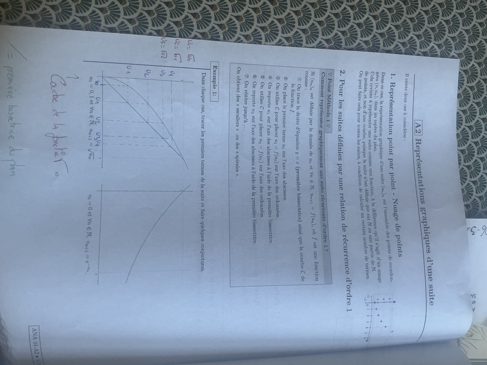
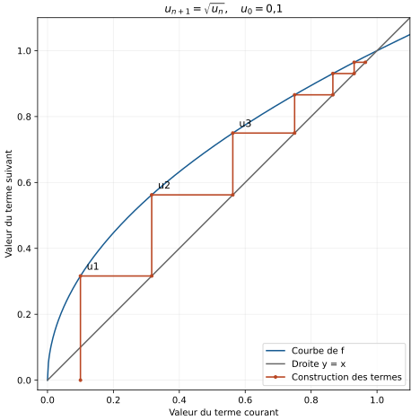
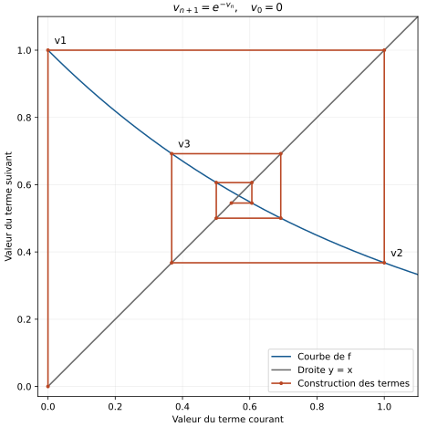

1 — La suite racine carrée
\[u_0=0{,}1,\qquad \forall n\in\mathbb N,\quad u_{n+1}=\sqrt{u_n}.\]
Représenter les points \((n,u_n)\), puis construire les termes d’une suite récurrente à l’aide de la courbe de sa fonction et de la droite \(y=x\).

Il existe deux cas à considérer.
Dans ce cas, la représentation graphique d’une suite \((u_n)_n\) est l’ensemble des points de coordonnées \((n,u_n)\) dans un repère du plan.
Cela revient à représenter une suite comme une fonction, à la différence qu’il s’agit d’un nuage de points et non d’une courbe, puisque la suite n’est définie que sur \(\mathbb N\) ou une partie de \(\mathbb N\).
On peut faire cela pour toutes les suites, à condition de calculer un certain nombre de termes.
L’abscisse est le rang entier \(n\) ; l’ordonnée est la valeur \(u_n\). On place par exemple \((0,u_0)\), \((1,u_1)\), \((2,u_2)\). On ne relie pas les points pour définir la suite entre deux rangs entiers.
Comment représenter graphiquement une suite récurrente d’ordre 1 ?
Si \((u_n)_n\) est définie par la donnée de \(u_0\) et \(\forall n\in\mathbb N,\ u_{n+1}=f(u_n)\), où \(f\) est une fonction connue :
On obtient des « escaliers » ou des « spirales ».
Depuis \((u_0,0)\), on va verticalement jusqu’à \((u_0,u_1)\) sur la courbe. Puis on va horizontalement jusqu’à \((u_1,u_1)\) sur la droite : l’ancienne ordonnée devient la nouvelle abscisse. On repart verticalement vers \((u_1,u_2)\), puis horizontalement vers \((u_2,u_2)\), et ainsi de suite.
À retenir : verticale vers la courbe, horizontale vers la droite. La verticale peut monter ou descendre. Ici les deux axes portent des valeurs de termes, pas le rang \(n\).
Dans chaque cas, tracer les premiers termes de la suite et faire quelques conjectures.
On utilise la courbe de \(f(x)=\sqrt{x}\) et la droite \(y=x\). On part de \(0{,}1\) sur l’axe horizontal.
Chaque valeur s’obtient en prenant la racine carrée du terme précédent. Ainsi \(u_2\) vaut \(\sqrt{u_1}\), et non \(\sqrt2\).
Depuis \((0{,}1,0)\), on monte jusqu’à la courbe, au point \((0{,}1,u_1)\), puis on va à droite jusqu’à \((u_1,u_1)\). On monte à nouveau vers \((u_1,u_2)\), puis on rejoint \((u_2,u_2)\). On poursuit de la même manière.

Conjectures : la suite semble strictement croissante, comprise entre 0 et 1, et converger vers 1.
Comme \(0<u_0<1\) et que \(0<x<1\) implique \(0<\sqrt{x}<1\), on obtient \(0<u_n<1\) par récurrence. Sur cet intervalle, \(\sqrt{x}>x\), donc \(u_{n+1}>u_n\).
La suite est croissante et majorée par 1 : le théorème de convergence monotone donne une limite \(\ell\). Par continuité, \(\ell=\sqrt\ell\), donc \(\ell\in\{0,1\}\). Comme \(\ell\ge u_0=0{,}1\), on exclut 0 : la limite est 1. Cette preuve utilise des résultats étudiés dans la suite du chapitre.
On utilise la courbe de \(g(x)=e^{-x}\) et la droite \(y=x\). Le signe moins porte sur tout le terme précédent.
On part de \((0,0)\), on monte sur la courbe jusqu’à \((0,1)\), puis on va à droite jusqu’à \((1,1)\). On descend vers \((1,e^{-1})\), puis on va à gauche jusqu’à \((e^{-1},e^{-1})\). On remonte ensuite vers la courbe et l’on poursuit.

Conjectures : la suite semble rester dans \([0,1]\) et converger vers une valeur proche de \(0{,}57\), en alternant de part et d’autre. Les termes de rang pair semblent croître et ceux de rang impair décroître.
La suite entière n’est pas monotone : \(v_0=0<v_1=1\), mais \(v_2=e^{-1}<v_1\). Ces deux comparaisons suffisent à le prouver. Une suite peut donc converger sans être monotone.
La fonction \(h(x)=e^{-x}-x\) est continue et strictement décroissante sur \([0,1]\), avec \(h(0)>0\) et \(h(1)<0\). Elle possède donc un unique zéro \(\alpha\), défini par \(\alpha=e^{-\alpha}\), et \(\alpha\approx0{,}567143\).
Comme \(g\) est strictement décroissante, un terme situé sous \(\alpha\) donne un terme suivant au-dessus, et inversement. Avec \(v_0<\alpha\), les termes pairs sont sous \(\alpha\) et les impairs au-dessus.
La composée \(g\circ g\) est strictement croissante. Puisque \(v_2>v_0\), ses itérations montrent que \((v_{2n})\) est strictement croissante. De même, \(v_3<v_1\) donne \((v_{2n+1})\) strictement décroissante.
Pour justifier leur limite commune, tous les termes de rang au moins 1 et \(\alpha\) appartiennent à \([e^{-1},1]\). Sur cet intervalle, \(|g'(x)|=e^{-x}\le q=e^{-e^{-1}}<1\). L’inégalité des accroissements finis donne, pour \(n\ge1\) :
Ainsi \(v_n\to\alpha\). Cette démonstration est un complément : la consigne demande seulement une construction et des conjectures.
A1 — Notations · A3 — Variations · Tous les cours prépa de maths